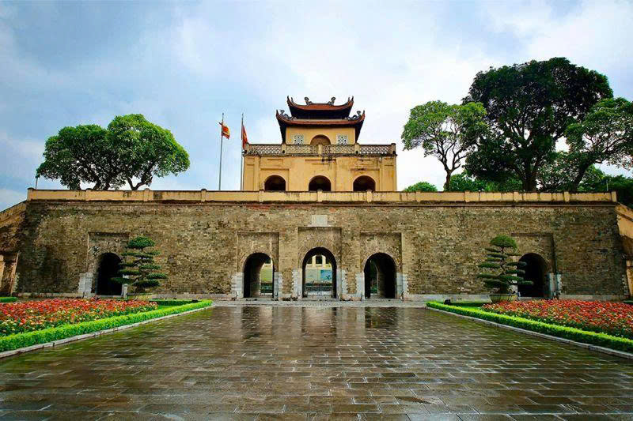
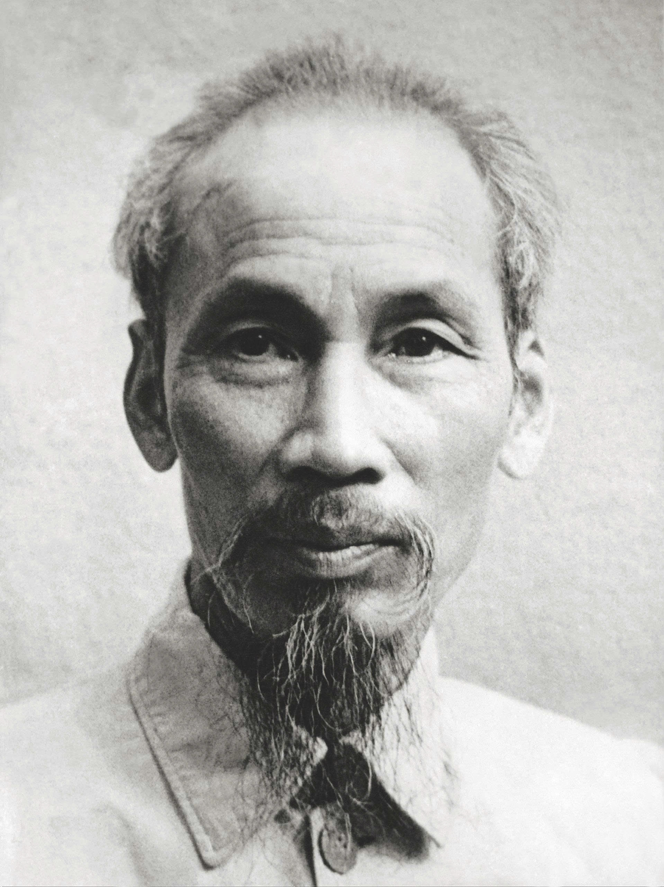
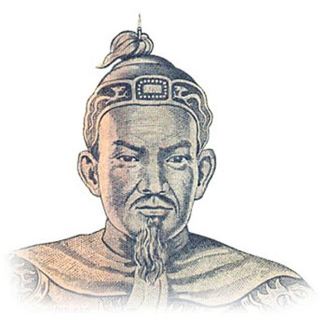
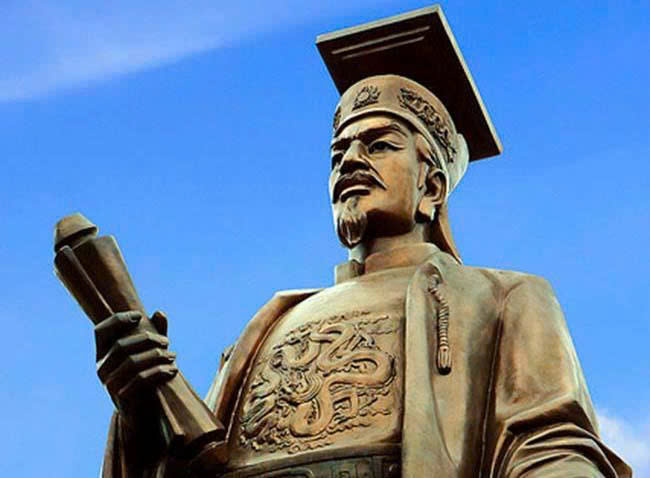

Lịch Sử và Văn Hóa Hà Nội

Thành Phố Ngàn Năm Văn Hiến
Hà Nội được thành lập năm 1010 bởi Vua Lý Thái Tông với tên gọi Thăng Long. Thành phố này là trung tâm chính trị, kinh tế và văn hóa của Việt Nam trong hơn 1000 năm. Với lịch sử lâu đời, Hà Nội bảo lưu được nhiều di tích cổ kính, bảo tàng, và các công trình kiến trúc độc đáo.
Đặc Điểm Văn Hóa
- Kiến Trúc: Kết hợp giữa phong cách Đông Á cờ điển và hiện đại
- Ẩm Thực: Những món ăn truyền thống nổi tiếng trên thế giới
- Lễ Hội: Tết Nguyên Đán, Lễ hội Đền Thái Độc
- Thủ Công Mỹ Nghệ: Làng tranh Đông Hồ, hàng lụa Hà Đông
Các Giai Đoạn Phát Triển
| Thời Kỳ | Sự Kiện Quan Trọng |
|---|---|
| Năm 1010 | Vua Lý Thái Tông xây dựng Thăng Long |
| Thế Kỷ XIII-XV | Thăng Long trở thành trung tâm quyền lực |
| Năm 1887 | Trở thành thủ phủ Đông Dương Pháp |
| Năm 1954 | Giải phóng Hà Nội, thành phố đổi tên thành Hà Nội |
| Hiện Nay | Thủ đô phát triển, hội nhập quốc tế |
Những Con Người Nổi Tiếng

Hồ Chí Minh
Lãnh tụ cách mạng, Chủ tịch nước

Trần Hưng Đạo
Nhà quân sự, chỉ huy Trận Bạch Đằng

Vua Lý Thái Tông
Người sáng lập Thăng Long